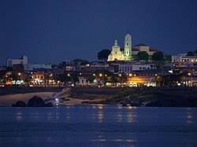

Bolivar City is a beautiful and historic city in Venezuela. It sits by the famous Orinoco River. It is known for its bright colonial houses, rich culture, and warm weather. The city is also the birthplace of Venezuela's freedom.
